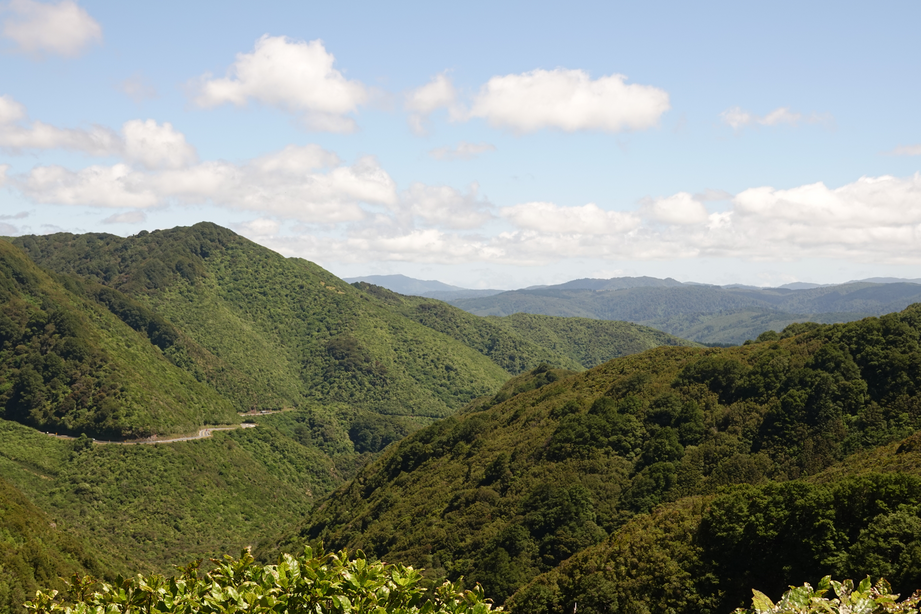
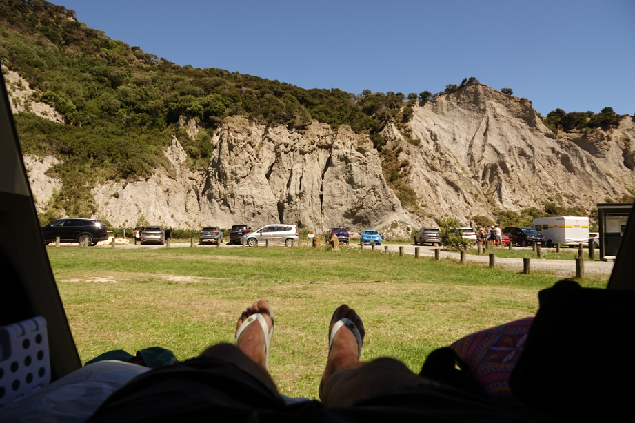
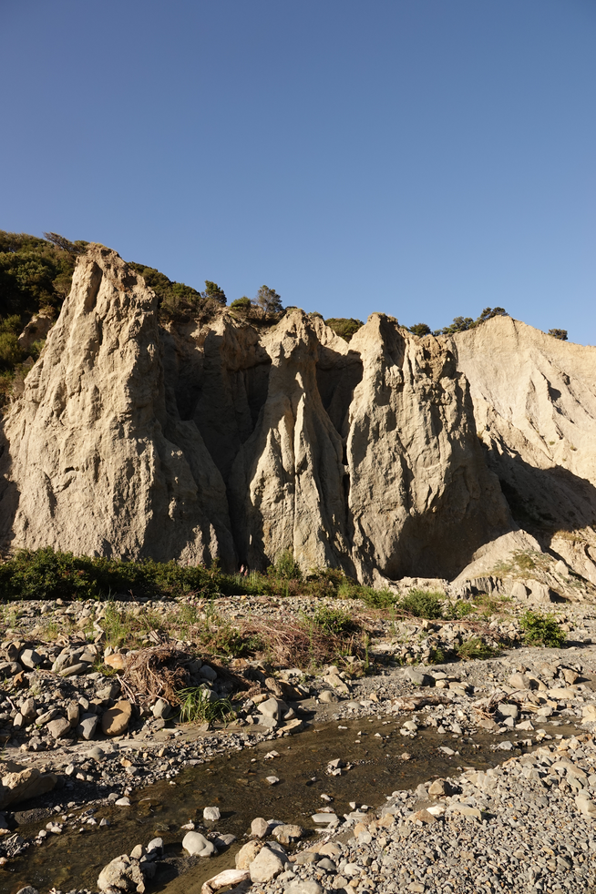
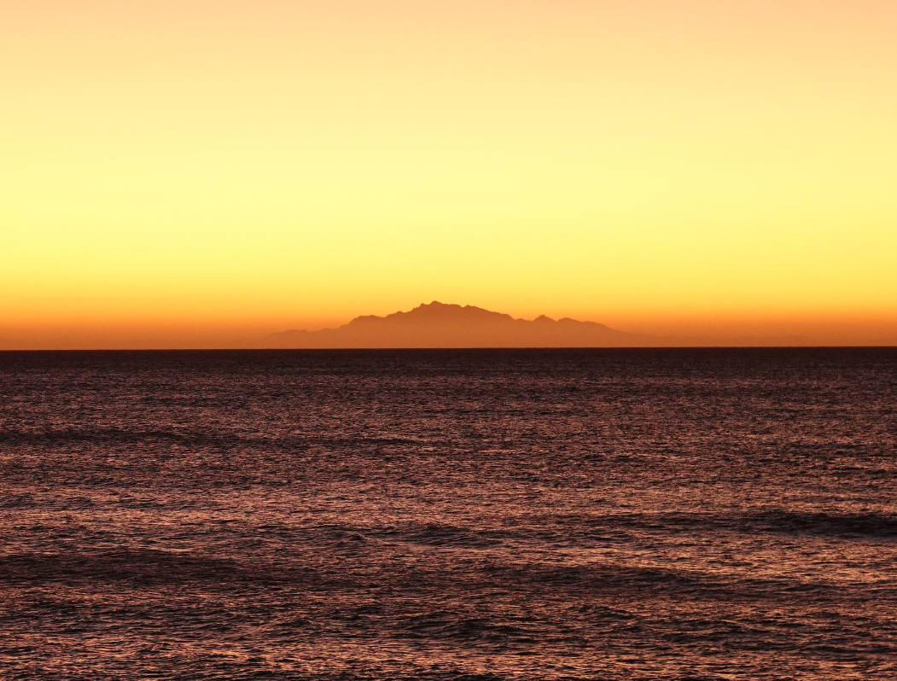
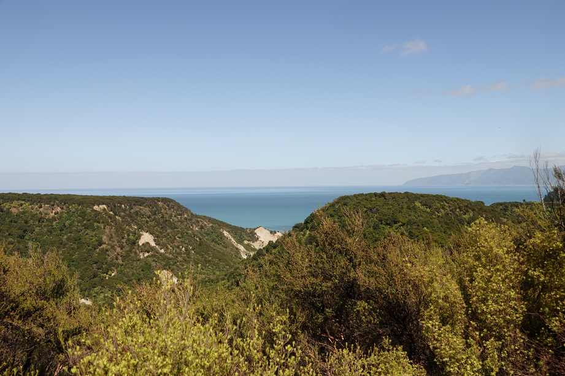
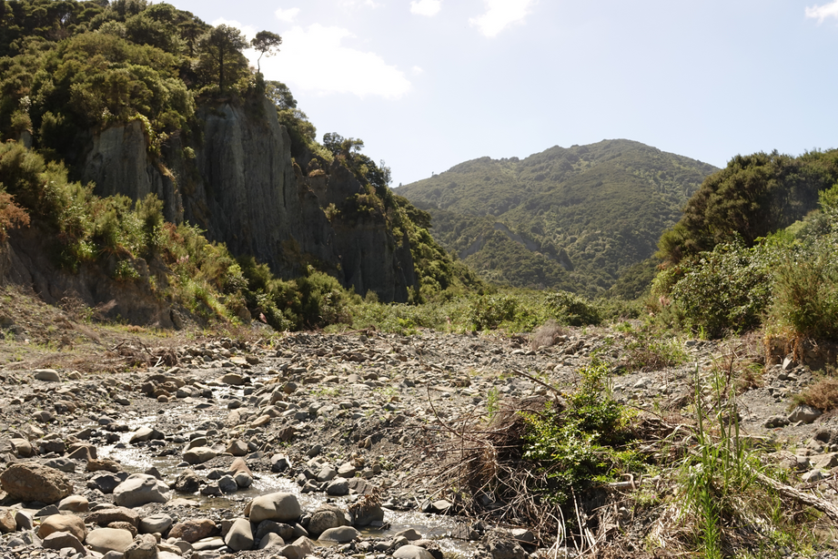
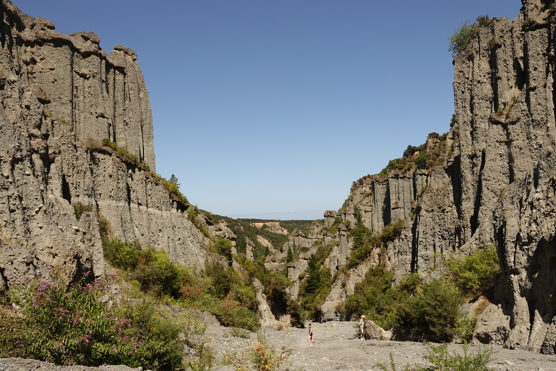

Created at: 2026-02-02
The Pinnacles track can be done as a day trip from Wellington (2 hours drive each way). There are two options of tracks:
One fun fact about this place is that it is where the Dimholt Road scene from Lord of the Rings was recorded.
View of the remutaka lookout (on my way to the pinnacles)

You can camp here, and this is the view from the car park:

In more detail:

On a clear day you can see the South Island. With the contrast of the sunset the view becomes even clearer.

Once you start going to the lookout loop track (which I didn't finish) you'll see good spots to admire the view:

And if you decide to go up the river bank, the walk is mostly on rocky ground:

And it takes about 40 min to reach the final view:
